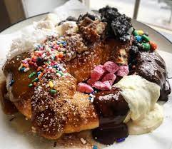

Michael's Everything Pretzel

It's Pretzel Day and how can Michael be productive unless he gets the one little thing on his brain, a soft, sugary pretzel! If you want to be productive by sleeping through the afternoon from a sugar crash, then make this pretzel for yourself by following the instructions below.
Ingredients: Pretzel
- 2 cups whole milk
- 2 packets active dry yeast
- 6 Tbsp brown sugar
- 3 1/4 cups all purpose flour
- 1 cup bread flour
- 2 tsp salt
- 4 Tbsp cooled melted butter
- 4 cups hot water combined with 1/2 cup baking soda
- Rock salt or cinnamon sugar
- Melted butter
Toppings
- Fudge sauce
- Butter Drizzle
- Sweet Glaze
- Cinnamon sugar
- Melted chocolate
- Melted white chocolate
- M&M's
- Mint Chips
- Chocolate Chips
- Miniature marshmallows
- Nuts (peanuts)
- Toffee Nuts (candied pecans)
- Sweetened coconut flakes
- Crushed Oreos
- Multi-colored sprinkles
- Cotton candy bits
- Powdered sugar
Directions:
- In a small saucepan, heat milk to 110℉. Remove milk from heat, add yeast and let sit for about 5 minutes, or until frothy and bubbly.
- Put milk and yeast mixture into the bowl of a stand mixer and add the brown sugar, all purpose flour, bread flour, salt, and butter. Knead mixture for 10 minutes using the dough hook attachment. Dough should not be sticky and should pull away from the sides of the bowl. If the dough is sticky, add a few tablespoons of flour.
- Place dough in a well-oiled, covered bowl and let rise in a warm place (recommended: on top of or inside an oven that is off) for 1 hour. This a great time to make your toppings! See the recipes below. To continue the pretzels:
- Preheat oven to 450℉. Spray workspace with cooking spray. Unwrap the dough, which should have doubled in size, and divide into 12 equal pieces. Roll dough out into long strands that are about the thickness of your finger and 3 feet long. Grab dough by ends and twist around itself three times. Then, fold the dough on top of itself, forming a pretzel. Watch the video above to see how it's done!
- Dip pretzels into the hot water and baking soda mixture, then place on baking sheet covered with parchment paper. Sprinkle rock salt or cinnamon sugar on top.
- Place pretzels into preheated oven for 12 minutes, or until lightly browned. Turn pretzels halfway through to ensure even cooking.
- After the pretzels have slightly cooled, brush them with melted butter.
- Top with sweet glaze, cinnamon sugar, chocolate drizzle, white chocolate drizzle, a smearing of hot fudge, M&Ms, caramel sauce, mint chips, chocolate chips, miniature marshmallows, nuts (peanuts), toffee nuts (candied pecans), coconut, peanut butter drizzle, crushed Oreos, multi-colored jimmies (sprinkles), cotton candy bits, and a gentle snowfall of powdered sugar.
Return to Homepage